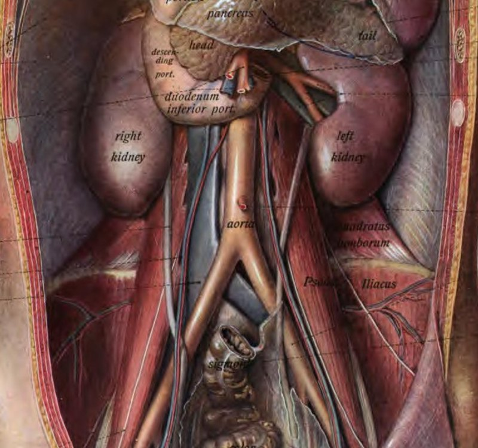
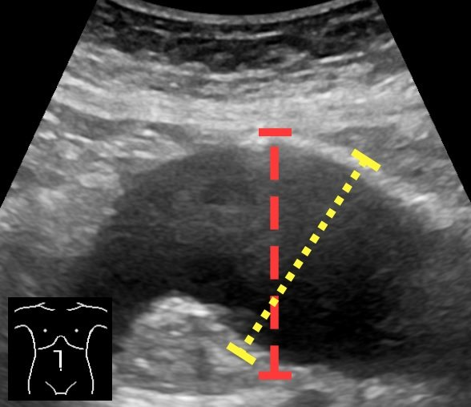
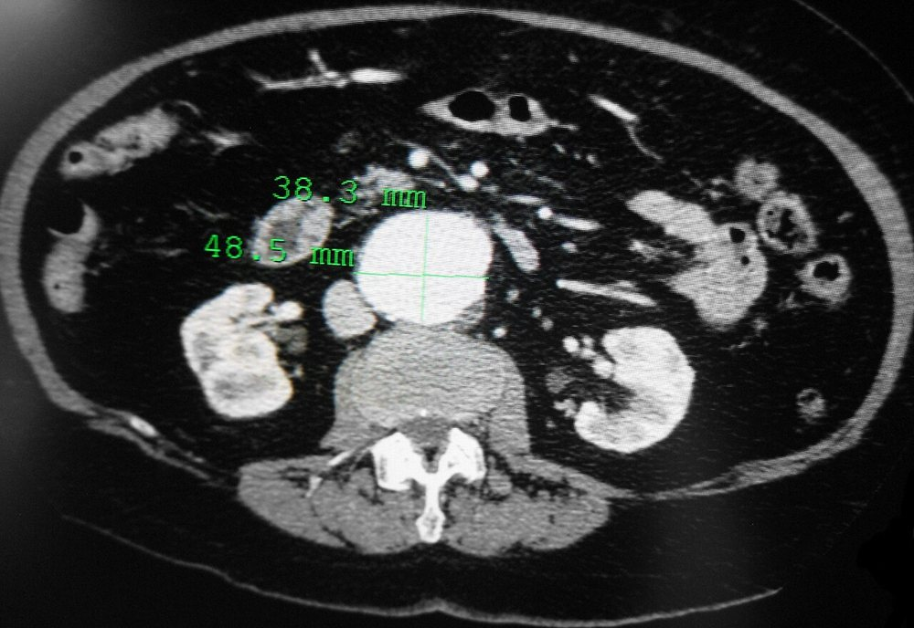
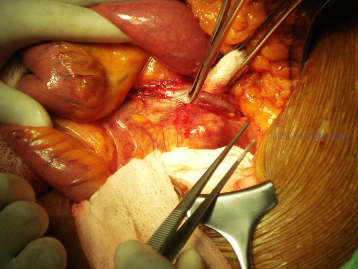
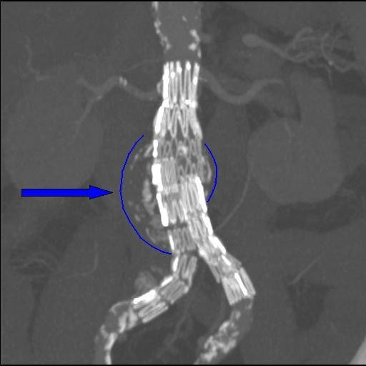
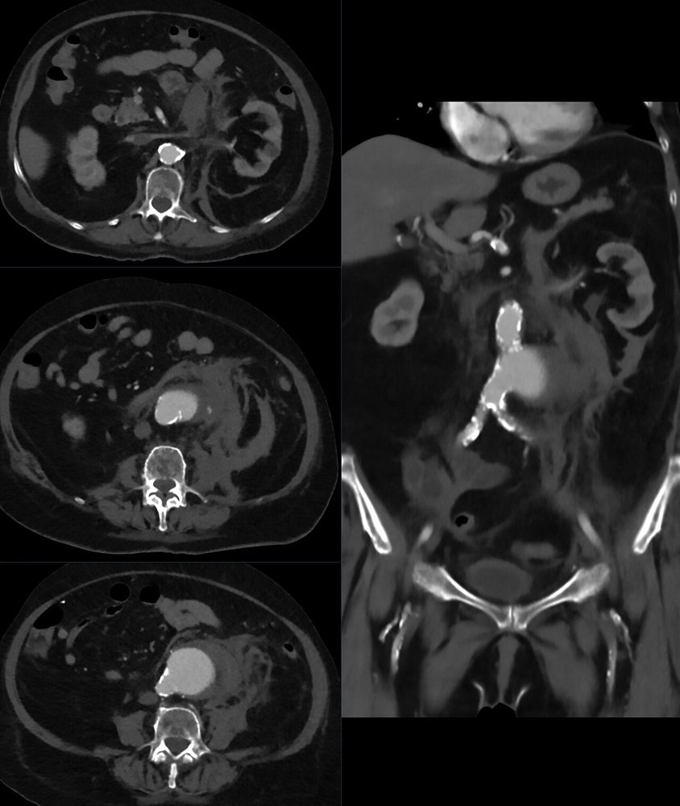
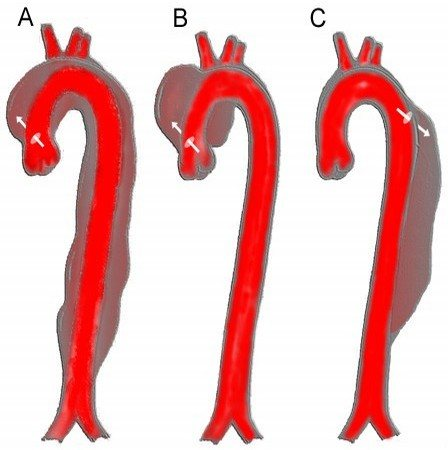
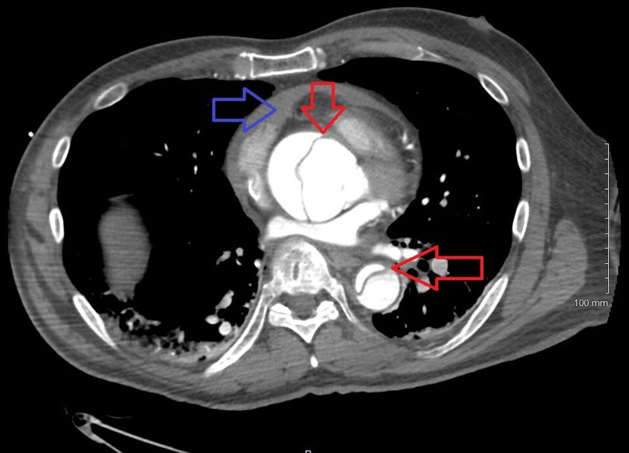

מחלות אבי העורקים
מפרצת של אבי העורקים הבטני: סקר, מעקב, ספי ניתוח וקרע. ודיסקציה: סיווג ומי הולך לחדר ניתוח
בסוף המפגש תדעו
- להגדיר מפרצת ולהכיר את גורמי הסיכון להיווצרות, להתרחבות ולקרע
- להכיר את ההמלצות לסקר ולמעקב במפרצת של אבי העורקים הבטני (AAA)
- לדעת את ספי הקוטר לתיקון ולהכיר את התיקון הפתוח ואת EVAR, כולל סוגי הדליפות
- לזהות מפרצת שנקרעה ולהבין את עקרונות הטיפול בה
- לסווג דיסקציה של אבי העורקים ולדעת מי צריך ניתוח דחוף ומי טיפול תרופתי
מה זו מפרצת?
- פוזיפורמית: הרחבה אחידה של כל ההיקף. סקולרית: בליטה מקומית של הדופן
- מפרצת אמיתית: כל שלוש שכבות הדופן. מפרצת כוזבת (pseudoaneurysm): חור בעורק עם דם שנחסם ברקמה שמסביב. למשל בהשקה ניתוחית או אחרי חבלה
- רוב המפרצות ניווניות. פחות שכיח: זיהום, דלקת, מחלת רקמת חיבור (Marfan, Ehlers-Danlos וסקולרי)
מי מפתח, אצל מי זה גדל ומי נקרע
- עישון
- היפרכולסטרולמיה
- יתר לחץ דם
- מין זכר, גיל, גובה
- סיפור משפחתי
- מפרצות נוספות
- גיל מבוגר
- מחלת לב קשה
- שבץ בעבר
- עישון
- השתלת לב או כליה
- מין נקבה
- קוטר התחלתי גדול
- לחץ דם ממוצע גבוה
- עישון פעיל
- FEV1 נמוך
- השתלת לב או כליה
אבי העורקים הבטני במבט של המנתח

👆 לחצו על מספר בציור כדי לקרוא עליו
"הצוואר" של המפרצת מתחת לעורקי הכליה. שם מציבים את המלחציים או את האיטום של EVAR. הווריד הכלייתי השמאלי עובר לפני אבי העורקים. בניתוח מזיזים אותו. אם חותכים אותו חייבים לשמור על הוורידים של בלוטת יותרת הכליה ושל הגונדה, שינקזו את הכליה.
כאן נמצאות רוב המפרצות הבטניות. כאן מודדים בסקר ובמעקב. בניתוח פותחים את השק, מוציאים את הקריש ותופרים את העורקים המותניים שמדממים מהדופן האחורית.
מימין לאבי העורקים. הוורידים האיליאקיים עוברים מאחורי העורקים וצמודים אליהם ליד ההתפצלות. לכן בתיקון בצינור ישר שולטים על העורקים האיליאקיים הקרובים בזהירות, בלי לנתח מאחוריהם.
בגברים עם AAA שכיחות גם מפרצות איליאקיות. השופכנים חוצים את העורקים מלפנים בגובה ההתפצלות: נזהרים בניתוח. ב-EVAR זה אזור האיטום התחתון (דליפה 1B) ודרך הגישה מהמפשעה.
יוצא מהחזית של אבי העורקים. בניתוח פתוח בודקים כמה הוא מדמם לאחור: מעט דימום, שומרים אותו להשתלה. בסוף בודקים את הסיגמואיד. אם יש איסכמיה משתילים אותו מחדש. אחרי EVAR הוא מקור לדליפה מסוג 2.
בדרך כלל שקטה עד שהיא לא
- רוב המפרצות בלי תסמינים. רבות מתגלות במקרה בהדמיה שנעשתה מסיבה אחרת
- כאב: מפרצת שגדלה מהר או מודלקת
- מפרצת בטנית גדולה: תחושת מלאות ושובע מוקדם
- מפרצת בחזה: צרידות מלחץ על העצב הלרינגאלי החוזר השמאלי (Ortner), לחץ על הסימפון השמאלי, תסמונת הווריד הנבוב העליון
- בבדיקה: דופק בולט בבטן, במפשעה או מאחורי הברך מעלה חשד למפרצת. בגבר עם AAA ממששים גם את העורקים הפופליטאליים

אולטרסאונד לסקר, CT לתכנון

את מי סורקים וכל כמה זמן
סקר חד-פעמי באולטרסאונד
- ההמלצות המקובלות: כל הגברים מגיל 65. גברים מגיל 55 עם סיפור משפחתי של AAA
- כוח המשימה האמריקאי (USPSTF): גברים בני 65–75 שעישנו אי פעם
- נשים: שנוי במחלוקת. מעט נשים השתתפו במחקרי הסקר
- מצאו AAA? בודקים גם את אבי העורקים בחזה
- מפרצת ידועה בלי מעקב: סיכון לקרע גבוה עד פי 6
מעקב לפי הקוטר (SVS)
מתי מתקנים?
עד שמגיעים לסף
- הפסקת עישון: עישון מאיץ את קצב ההתרחבות
- לחץ דם: להוריד את הלחץ הסיסטולי ואת לחץ הדופק. חוסמי בטא מתאימים לשתי המטרות
- סטטין: קשור להתרחבות איטית יותר, משפר הישרדות אחרי תיקון ומוריד אירועים לבביים. אספירין למניעה שניונית
- פעילות מתונה כן. מאמץ עצים וספורט מגע: לא
- ניתוח כשהסיכון של המשך מעקב גבוה מהסיכון של התיקון
קוטר לתיקון מפרצת בלי תסמינים
תיקון פתוח של מפרצת בטנית
- גישה: דרך הבטן (בדיקה של הבטן, שליטה מעל הצליאק, חשיפה טובה של האגן) או רטרופריטונאלית מצד שמאל
- חושפים את צוואר המפרצת. בדרך: וריד המזנטרי התחתון והווריד הכלייתי השמאלי, שעובר מעל אבי העורקים
- הפרין לפני הצבת המלחציים. פותחים את השק, מוציאים את הקריש ותופרים את העורקים המותניים שמדממים לאחור
- תופרים שתל סינתטי: קודם השקה עליונה ואחר כך תחתונה. משחררים את המלחציים לאט, בתיאום עם המרדים
- בסוף בודקים את הסיגמואיד: איסכמיה? משתילים מחדש את העורק המזנטרי התחתון
- סוגרים את שק המפרצת ואת הצפק האחורי מעל השתל, כדי להפריד אותו מהמעי

EVAR ודליפות (endoleaks)
- שתל-סטנט בצורת Y שמוחדר דרך העורקים הפמורליים. הצלחתו תלויה באזור האיטום והקיבוע באבי העורקים
- מעקב הדמיה לכל החיים: חודש, 6 חודשים, שנה ואחר כך כל שנה. מי שלא יכול להתמיד במעקב אולי לא מתאים ל-EVAR
- EVAR בבריטניה (1,252 מטופלים, מפרצת מעל 5.5 ס״מ): תמותה ב-30 יום 1.8% לעומת 4.3% בניתוח פתוח. היתרון נעלם בהמשך. היו יותר ניתוחים חוזרים
- לאורך זמן: עלייה בתמותה הקשורה למפרצת אחרי EVAR, חלקית בגלל קרעים מאוחרים

מפרצת שנקרעה
- בניסויים: אין הבדל בתמותה המוקדמת בין תיקון פתוח ל-EVAR (בניסוי אירופי: 39% לעומת 35% תמותה ניתוחית)
- IMPROVE: אין הבדל ב-30 וב-90 יום. יתרון ל-EVAR אחרי 4 שנים, שנעלם אחרי 7 שנים
- מי שהתאים ל-EVAR הגיע לתוצאות טובות יותר. לכן רבים ממליצים על גישה של EVAR קודם
- מה צריך: צוות מיומן, ציוד אנדווסקולרי זמין ופרוטוקול מוסכם: מעבר מהיר לחדר ניתוח שבו אפשר גם פתוח וגם אנדווסקולרי, מינימום בדיקות לפני
- בלון חוסם באבי העורקים לפני ההרדמה: יכול לתמוך בלחץ הדם בכל סוג תיקון. ב-EVAR, הרדמה מקומית עדיפה על כללית
- העברה לבית חולים אחר: אחד מכל 7 מועברים לא מגיע לניתוח. כשיש אפשרות לטפל במקום, זה עדיף

דיסקציה: מגדירים לפי אבי העורקים העולה
- דיסקציה: קרע באינטימה ודם שמפצל את שכבת המדיה. המצב החריף השכיח ביותר של אבי העורקים
- היארעות 3.5–16.3 ל-100,000 בשנה. גברים 16 לעומת נשים 7.9 ל-100,000. נשים מגיעות מאוחר יותר ובתמותה גבוהה יותר
- Stanford A: כל מעורבות של אבי העורקים העולה. Stanford B: רק דיסטלית לעורק התת-בריחי השמאלי. סוג A שכיח פי 2
- DeBakey: I עולה, קשת ויורד · II רק עולה · III רק יורד (IIIa בחזה, IIIb מתחת לסרעפת)
- שני שיאי גיל: מבוגרים עם יתר לחץ דם וטרשת. צעירים עם מחלת רקמת חיבור, מסתם דו-צניפי או שימוש בקוקאין
- חריף עד שבועיים. כיום גם חלוקה מפורטת: עד 24 שעות, 2–7 ימים, 8–30 ימים, מעל 30

המתחזה הגדולה
- הדיסקציה חוסמת ענפים (malperfusion) ולכן נראית כמו מחלות אחרות: תסמונת כלילית חריפה, שבץ, שיתוק ברגליים, איסכמיה של גפה, אי ספיקת כליות או בטן חריפה
- ב-526 חולים עם סוג A: ל-90% היה כאב, אבל אצל יותר מ-20% הכאב היה בבטן
- הבדל או חסר בדפקים: רק ב-139 מתוך 526. א.ק.ג תקין רק ב-31%. ביותר מרבע: סימני איסכמיה או אוטם שמטעים לכיוון הלב
- CT או MRI: רגישות וסגוליות עד 100%. פרוטוקול CT משולב יכול לשלול גם תסחיף ריאתי ומחלה כלילית
- אקו דרך החזה לא שולל. TEE: רגישות 98%

A לחדר ניתוח, B לתרופות (בדרך כלל)
- תמותה של 1–2% לשעה ב-24 השעות הראשונות בלי טיפול
- ניתוח פתוח בלב-ריאה, לרוב בעצירת מחזור בקירור: סוגרים את הקרע ומחליפים את אבי העורקים העולה
- תמותה ניתוחית 15–25%. במרכזים מתמחים: ספרה אחת
- טיפול תרופתי רק כגשר או כשהמטופל לא מועמד לניתוח
- חוסמי בטא קודם: מורידים את לחץ הדם ואת הכוח של כל פעימה על הדופן
- מסובכת (קרע או malperfusion): TEVAR, סטנט-שתל שמכסה את הקרע
- לא מסובכת: טיפול תרופתי ומעקב. TEVAR אפשרי כשיש סימנים בסיכון גבוה
- INSTEAD-XL: פחות תמותה הקשורה לאבי העורקים אחרי 5 שנים עם TEVAR
מחקרים והנחיות שכדאי להכיר
46,611 גברים בני 65–74. הסקר כלל CT (סידן בעורקים הכליליים ומפרצות), ABI ובדיקות דם. אחרי 5.6 שנים: תמותה 12.6% בקבוצת ההזמנה לעומת 13.1% בביקורת (יחס סיכון 0.95, לא מובהק)
Lindholt JS et al. N Engl J Med 2022;387:1385-94160 המלצות: סקר, מעקב, תיקון מתוכנן. במפרצת שנקרעה גם יתר לחץ דם מתירני ובלון חוסם באבי העורקים. כוללות קבלת החלטות משותפת עם המטופל
Wanhainen A et al. Eur J Vasc Endovasc Surg 2024;67:192-331מאחדות לראשונה את ההמלצות לכל אבי העורקים: אבחנה, בדיקה גנטית וסקר משפחה, טיפול ומעקב. מדגישות קבלת החלטות משותפת והיריון. וגם את נפח הניתוחים וצוות אאורטה רב-תחומי במוסד
Isselbacher EM et al. Circulation 2022;146:e334-e48258 מטופלים בלי סוכרת עם מפרצת של 3.0–4.9 ס״מ, 2 גרם מטפורמין לעומת אינבו. אחרי 12 ו-18 חודשים לא היה הבדל בקוטר או בנפח המפרצת. המחקר קטן מהמתוכנן (נעצר בגלל הקורונה)
Eilenberg W et al. Eur J Vasc Endovasc Surg 2025;70:417-25חמישה דברים לקחת למחלקה
- מפרצת היא הרחבה של יותר מ-50%. רובן שקטות ומתגלות במקרה. עישון הוא גורם הסיכון החשוב שאפשר לשנות
- סקר באולטרסאונד לגברים מגיל 65. המעקב מתקצר ככל שהמפרצת גדולה יותר
- מפרצת בטנית מתקנים מ-5.5 ס״מ. פתוח או EVAR. אחרי EVAR: מעקב לכל החיים
- מפרצת שנקרעה: מעבר מהיר לחדר ניתוח עם פרוטוקול מוכן. רבים מעדיפים EVAR קודם
- כאב חד בחזה, בגב או בבטן עם חסר בדפקים: חושבים על דיסקציה. A לניתוח, B לחוסמי בטא